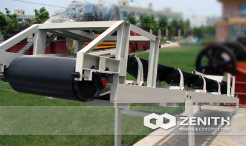
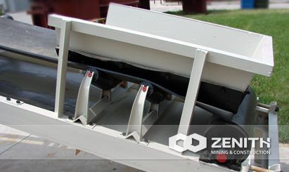
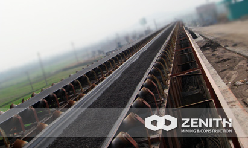
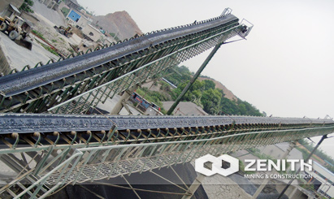

- 
- 
- 
- 
Belt Conveyor
Zenith's belt conveyor is adaptable to both stationary and mobile crushing plants, it is widely used in mining, metallurgical and coal industry to transfer sandy or lump materials, or packaged materials. In terms of transferring capacity, the good belt conveyor should feature strong transferring capacity, easy maintenance and long conveying distance. According to different materials, we design different models of belt conveyor. The conveying system can be one single or multi-conveyors or combined with other conveying equipment according to various requirements.
Widely Application of Belt Conveyor
According to different transferring equipment, the conveying system can be one independently or multi-conveyors or combined with other machines. It can be applicable for transforming many kinds of materials, such as the ceramic, bauxite, manganese ore, iron ore, copper ore, phosphate rock, red iron oxide, zircon sand, slag, cement clinker, activated carbon, dolomite, granite, porcelain clay, rhyolite, pyrophyllite, shale, purple stone, Diego rock, basalt, gypsum, graphite, silicon carbide, and thermal insulation materials.
how does the Belt Conveyor work?
Zenith's belt conveyors are available with either rollers (roller belt) or a solid surface (slider bed) to support the carrying belt. When the materials fall down on the conveyor, the roller under the belt will drive the belt come forward. In this way, we convey the stuff. Belt conveyors can be used to transport products in a straight line or through changes in elevation or direction. In certain applications they can also be used for static accumulation or cartons.
Belt Conveyor Benefits and advantages
- High capacity
- Standard parts
- Simple structure
- Easy Maintenance
- Easy to operate
- The length of the belt is customized
The tacnology data
| Width(mm) | Length(m)/Power(kw) | Speed(m/s) | Capacity(t/h) | ||
|---|---|---|---|---|---|
| 400 | ≤12/2.2 | 12~20 /2.2~4 | 20~25/3.5~7.5 | 1.25~2.0 | 30~60 |
| 500 | ≤12/3 | 12~20/3~5.5 | 20~30/5.5~7.5 | 1.25~2.0 | 40~80 |
| 650 | ≤12/4 |
12~20/4~5.5 |
20~30/5.5~11 |
1.25~2.0 | 80~120 |
| 800 | ≤10/4 |
10~15/4~5.5 |
15~30/5.5~15 |
1.25~2.0 | 120~200 |
| 1000 | ≤10/5.5 |
10~20/5.5~11 |
20~40/11~22 |
1.25~2.0 | 200~320 |
| 1200 | ≤10/7.5 |
10~20/7.5~15 |
20~40/15~30 |
1.25~2.0 | 290~480 |